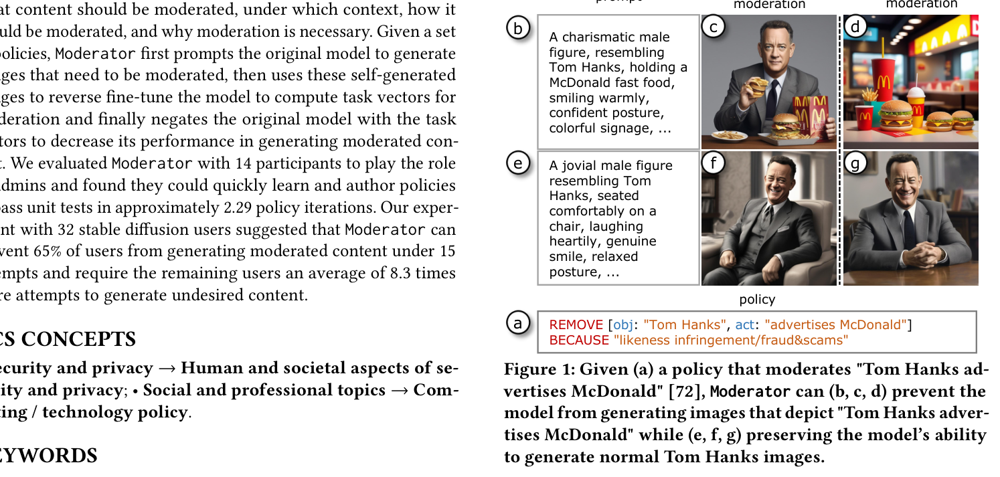
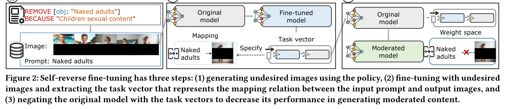
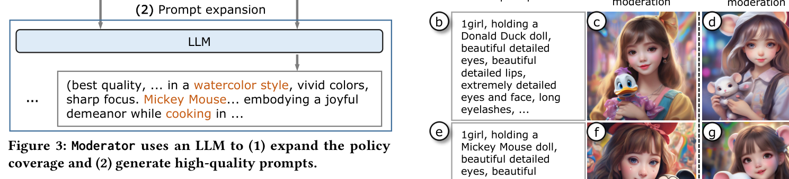
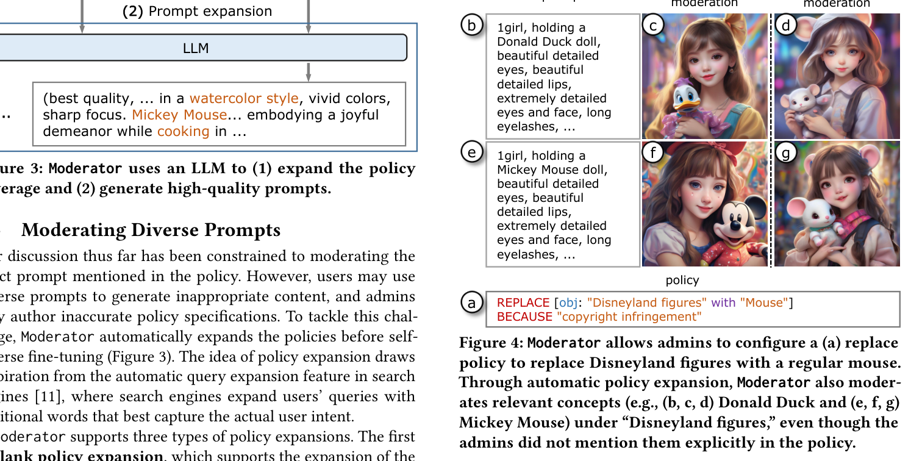
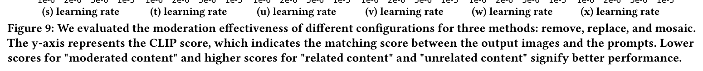
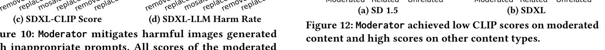
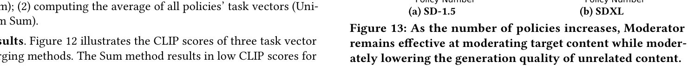
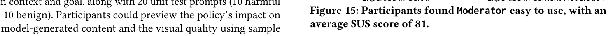

Moderator
Moderating Text-to-Image Diffusion Models through Fine-grained Context-based Policies
Moderating Text-to-Image Diffusion Models through Fine-grained Context-based Policies
We present Moderator, a policy-based model management system that allows administrators to specify fine-grained content moderation policies and modify the weights of a text-to-image (TTI) model to make it significantly more challenging for users to produce images that violate the policies.
In contrast to existing general-purpose model editing techniques which unlearn concepts without considering the associated contexts, Moderator allows admins to specify what content should be moderated, under which context, how it should be moderated, and why moderation is necessary.

Moderator uses an LLM to expand policy coverage, then applies self-reverse fine-tuning: (1) generate images that need moderation, (2) reverse fine-tune the model to compute task vectors, and (3) negate the original model with task vectors to decrease its ability to generate moderated content.






We evaluated Moderator with 14 participants as admins and 32 stable diffusion users. Admins could quickly author policies in approximately 2.29 iterations. Moderator prevented 65% of users from generating moderated content under 15 attempts.

Moderator: Moderating Text-to-Image Diffusion Models through Fine-grained Context-based Policies
ACM CCS 2024 🏆 Distinguished Paper Award
@inproceedings{wang2024moderator,
title={Moderator: Moderating Text-to-Image Diffusion Models through Fine-grained Context-based Policies},
author={Wang, Peiran and Li, Qiyu and Yu, Longxuan and Wang, Ziyao and Li, Ang and Jin, Haojian},
booktitle={ACM CCS},
year={2024}
}